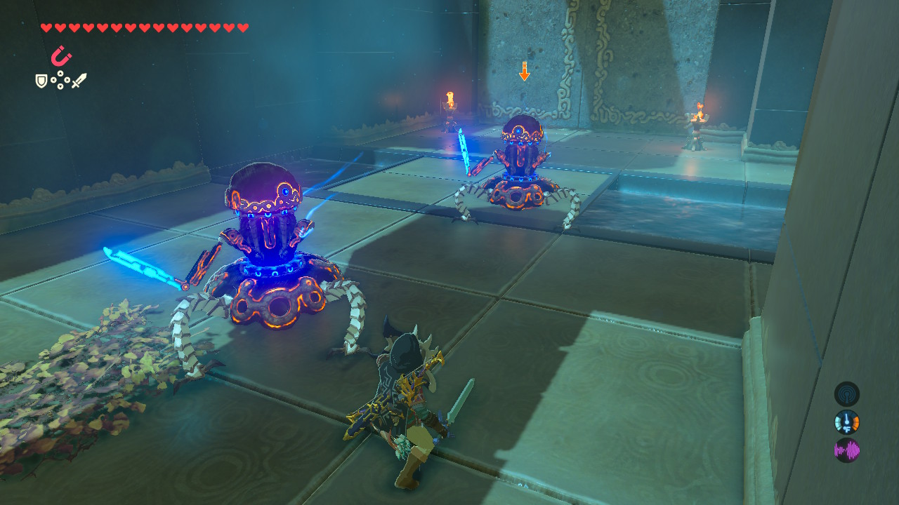

Shrines in general
- You CAN'T GET INTO a shrine without activiting the tower.
- The reward for completing a shrine is a spirit orb.
- If you have four Sprit orbs you can find a statue to get a reward.

Solving the Shrines
- The beggening Shrines involve using your powers and logic.
- In some shrines you will need to battle to win.
- Make sure you tried every possible resource you have BEFORE YOU GIVE UP.
Finding a Shrine
- Some towers give you a noise when you are close by a shrine.
- If you are in a village, some villigers can tell you if you are close by.
- Go to a high place close by you may spot it better.